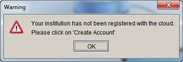
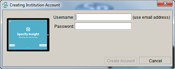
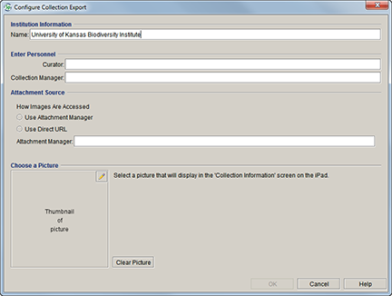

1. Create a Specify Cloud Account
Specify utilizes the cloud to store collection data for each institution, which then allows the iPad to access and import the data. The account for the Specify cloud space is identified by the institution's Global Unique Identifier (GUID) within Specify. Therefore, if collections within your institution use separate databases, each with unique GUID codes for the institution, your institution will require a separate Specify cloud account for each of the databases. If collections within your institution use separate databases, but the same GUID code is used to identify the institution, then each of the collections will store their data files in the same Specify cloud account.
If you have several collections within a single database, each of the collections will store their data files in a single Specify cloud account.
Note: The GUID code for your institution can be found on the Institution form. To open the Institution form click System > System Setup > Configuration, then choose Institution in the sidebar. The GUID is displayed in the GUID field on the form.
Choose System > iPad Exporter to open the iPad Export tool.
If your institution does not have a Specify cloud account a warning will display.

Specify cloud account warning.
If you see this message click Create Account in the sidebar menu.

Create Specify cloud account.
Type in a Username. The username needs to be unique for the entire cloud, therefore we require it to be in the format of an email address: 'name'@'institution'. The email address is not used for any other purpose and is not required to be an actual email account - it is simply a name in the form of an email that you are creating as you type. An example email might be, entomology@ku.edu, as it is both meaningful and unique.
Note: each institution may have as many users as they wish. To create a new user click the Login button.
Type in a Password and click Create Account.
2. Configure Collection Export
Click Configure Collection Export on the sidebar menu if it does not open automatically.

Collection Information for iPad Export
The Collection Information Export tool displays the information required by the Specify Insight iPad application. The fields within this tool are automatically filled-in based on the information in the database, but can be changed.
Note: changes to the Institution Name will be reflected in the Institution table in Specify.
Name is the name of your institution.
Curator is the name of the curator
Collection Manager is the name of the person who manages the collection.
Attachment Source refers to the server location of the attachments for the collection. If you are utilizing an Attachment Manager or using Direct URL, type in the url for these locations.
If you are not using either of these sources for your attachments, simply leave the text box blank.
Note: if you are not storing your attachments on a server via an Attachment Manager or Direct URL they will not be available for display within the Specify Insight iPad application.
Click the
(edit) icon to Choose a Picture to display on the Collection Information screen within the Specify Insight iPad application.
Clear Picture will delete the current picture.
3. Export Data
Click the Export to iPad button.
Logout to logout of the Specify cloud.